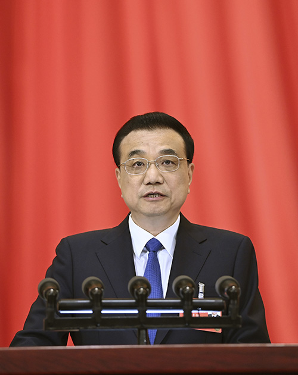

2020年05月29日 22:10 央视新闻客户端
全国人大涉港决定28日通过，英美等国随即发表涉港联合声明，黄之锋等乱港分子也马上跳了出来。此时，香港社会各界应该拿出什么态度？
28日，公安部党委（扩大）会议明确表示，要认真学习贯彻《全国人民代表大会关于建立健全香港特别行政区维护国家安全的法律制度和执行机制的决定》全国人大通过涉港决定，打中了反中乱港分子及其“主子”的七寸，这股势力接下来进行疯狂反扑是意料中的事情

针对有关英美等国涉港联合声明，多个中国驻外大使馆密集发声——中国驻英国大使馆敦促有关国家认清香港已经回归中国的事实；中国驻美大使馆表示将采取必要措施反制外部势力干预
香港特区行政长官林郑月娥第一时间表示，特区政府将全力配合全国人大常委会尽快完成有关立法，履行维护国家安全的职责，确保香港在“一国两制”下的长期繁荣稳定发展下去
内容来自央视网 编辑：田野